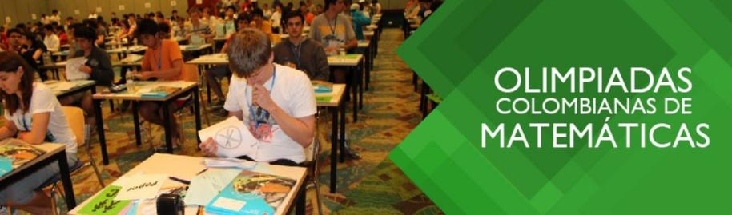

¿Un evento para aficionados?
Las olimpiadas de matemáticas son competencias que se realizan cada año a nivel mundial, donde la finalidad es encontrar aquellos jóvenes creativos, talentosos, hábiles y, ante todo, aficionados a solucionar problemas matemáticos. Para este año 2019 se celebrará la 60.a IMO (International Mathematical Olympiad) en la ciudad de Bath, Reino Unido.

En Colombia, este evento es organizado principalmente por la Universidad Antonio Nariño a través de las Olimpiadas Colombianas de Matemáticas, el cual está dirigido para personas desde tercer grado de primaria en adelante. En el caso de los estudiantes de pregrado universitario, se realizará la 13.a Olimpiada Colombiana de Matemáticas Universitaria a partir del 6 de abril hasta el 1 de junio del año en curso. Esta olimpiada consta de tres fases: Primera prueba, ronda final y premiación ronda final.
Si estás interesado en participar puedes obtener más información acá

Nicole Nuñez
Estudiante del pregrado de matemáticas de tercer semestre. Integrante del Semillero de Matemáticas Aplicadas a la Computación